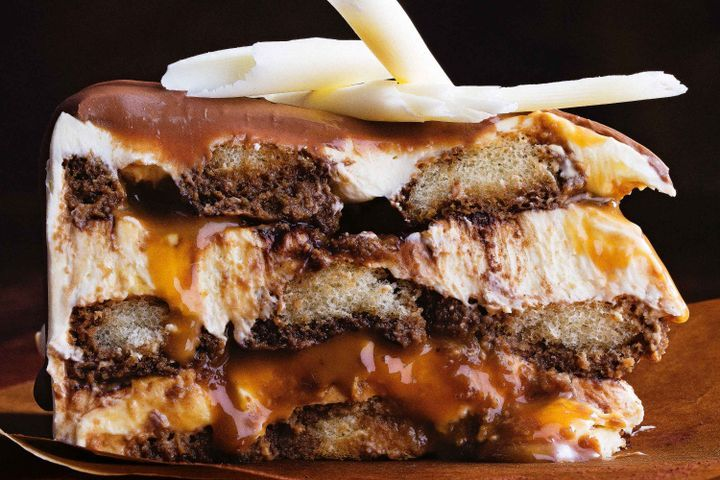

Salted caramel tiramisu

Description
This no-cook twist on the classic tiramisu combines salted caramel and indulgent chocolate Baileys.
Ingredients
- 1 tbsp NESTLÉ BAKERS' CHOICE Cocoa
- 250ml (1 cup) cooled filter coffee
- 125ml (1/2 cup) Baileys Chocolate Luxe
- 350g small savoiardi biscuits
- 2 x 250g ctn mascarpone
- 250g fresh ricotta
- 600ml double cream, lightly whipped
- 125ml (1/2 cup) Bonne Maman Caramel Spread
- 1/2 tsp sea salt flakes
- 200g milk chocolate, melted, cooled
- White chocolate curls, to decorate
Steps
- Release base from a 20cm (base measurement) springform pan. Turn over. Spray with oil. Place a sheet of baking paper over the base, allowing 4cm to overhang. Secure base, paper side-up, in the pan. Grease and line the side. Dust base of pan with a third of the cocoa powder.
- Combine coffee and Baileys in a bowl. Dip a biscuit in the coffee mixture and place in the prepared pan. Repeat with one-third of the biscuits and coffee mixture, trimming biscuits to fit, to form a single layer over base of pan.
- Combine the mascarpone and ricotta in a bowl. Process with a stick blender until just smooth. Fold through cream. Spread a quarter of the mascarpone mixture over biscuits.
- Combine the caramel and salt in a bowl. Dollop half of the caramel mixture over the mascarpone layer. Dust with half of the remaining cocoa. Repeat layering with half of the remaining biscuits and coffee mixture. Spread with a third of remaining mascarpone mixture and dollop with the remaining caramel mixture. Dust with remaining cocoa. Repeat with remaining biscuits and coffee mixture. Cover with plastic wrap and place in the fridge for 8 hours or overnight to set. Place remaining mascarpone mixture in the fridge.
- Place tiramisu on a serving plate. Spread remaining mascarpone mixture over the top and sides, smoothing the edges. Place in the fridge for 30 minutes to set.
- Pour the melted chocolate over the top of the tiramisu. Working quickly, spread to the edges, allowing chocolate to dribble down the sides, and decorate with chocolate curls.